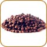
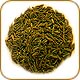
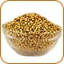

| Spice Image | Spice Description | Price |
|---|---|---|
| Cinnamon: one of the most popular of our spices, due to its sweet flavor and prominent role in baked goods and candies. Cinnamon is also wonderful in stews and sauces. | $10.75 | |
| Nutmeg: comes from the seed of a tropical tree. It has a sweet, rich, and aromatic flavor that complements meats, vegetables, tomato sauces, and baked goods. | $3.95 | |
| Bay Leaf: his versatile herb goes extremely well with soups, stews, roasts, and anything that is simmered or cooked slowly. | $5.75 | |
|  | Cloves: dried flower buds of an evergreen tree in the myrtle family, found natively in Madagascar, Brazil, Panang, and Ceylon. The use of cloves in cuisine and even medicine dates back to ancient times. Cloves are strong in flavor and aroma and are commonly used in cookies and cakes. | $8.75 |
|  | Cumin: common to Indian and Middle Eastern cuisine. With its strong flavor and pungency, it's a prominent ingredient in curries. | $5.00 |
| Star Anise: has a powerful, licorice-like flavor. It is native to many Eastern countries including China, Vietnam, and Japan. | $4.75 | |
| Pepper: popular flavoring for sauces, meats, and marinades, pepper is one of the most common spices used in cuisines across the globe. | $6.75 | |
|  | Coriander: a great spice for all kinds of things. It can be used in salad dressings, as a sweet spice to go with apples, cauliflower, cabbage, or in a curry. | $3.75 |